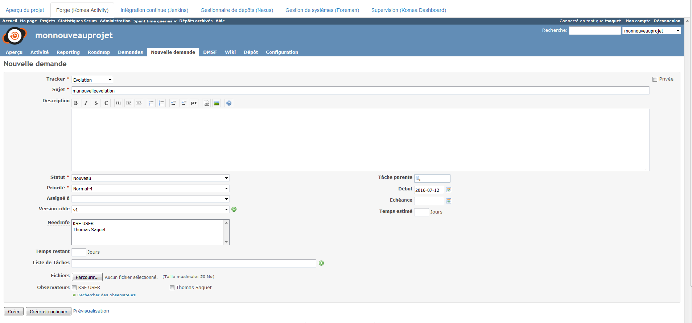
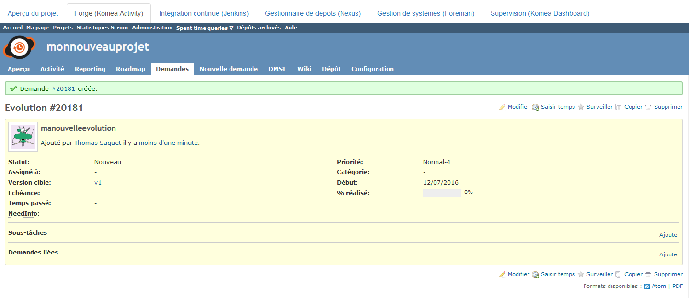
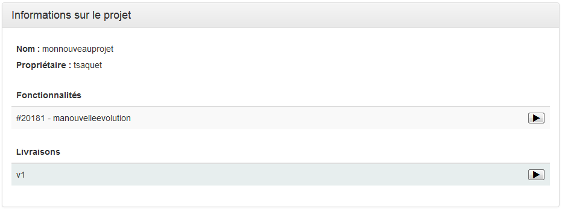
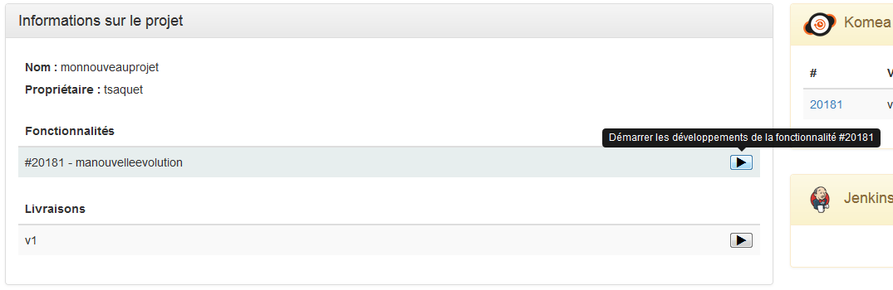
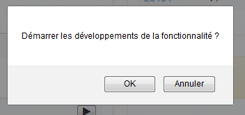
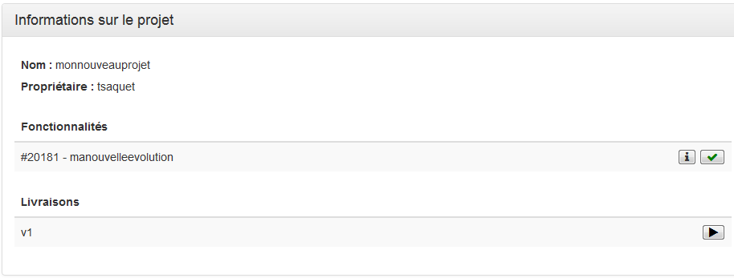
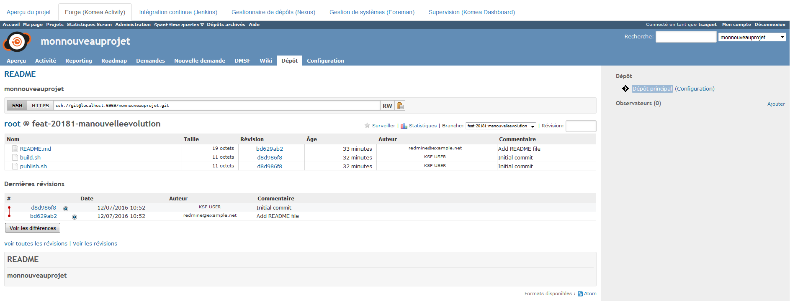
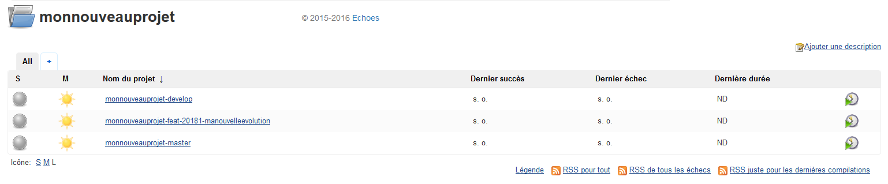
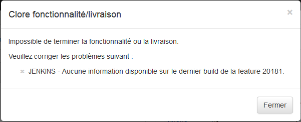
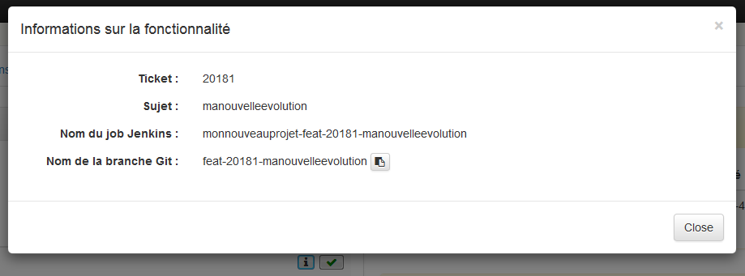

- Site
- Page
- « Créer un projet
- Créer des mod... »
Si on devait résumer la gestion d’un projet au quotidien, d’un point de vue informatique c’est principalement la gestion des demandes d’évolutions et les livraisons des nouvelles versions.
Pour cela, KSF, à travers Komea Foundation, se base sur les principes de git flow pour gérer la création de nouvelles features et de nouvelles releases, tout en s’appuyant sur les outils existants pour faciliter la gestion de ce modèle.
Cela se passe dans la forge logicielle.
Une version doit pré-éxister. Avant de commencer à travailler sur un projet, quelle que soit la méthode de travail, il faut préparer les tâches à effectuer. Ces tâches sont décrites dans des tickets “evolution”. Pour ajouter une nouvelle fonctionnalité à développer, cela se passe là encore dans la forge logicielle.
| Etape | Description | Image |
|---|---|---|
| 1 |
|
 |
| 2 | Une fois le ticket créé, on obtient le résultat suivant. |  |
| 3 | Lorsque l’on revient à l’onglet principal du projet dans Komea Foundation, on observe qu’une nouvelle ligne est apparue. |  |
Cela correspond à “feature start” au sens git flow. Une branche feature est créée à partir de la branche develop.
Le ticket est passé au statut “En cours” Le dépôt est mis à jour avec la nouvelle branche
Le job correspondant à la nouvelle branche est créée automatiquement. Il est préparamétré pour utiliser les fichiers build.sh et deploy.sh qui sont dans la branche. Il est également préparamétré pour déposer le résultat du build dans Nexus. Si Komea Checking est activé, il est aussi préparamétré pour passer la douane applicative.
| Etape | Description | Image |
|---|---|---|
| 1 | On clique sur le bouton de type “play” pour démarrer le développement de la feature correspondant |  |
| 2 | Une popup de confirmation apparaît. |  |
| 3 | La feature est démarrée. |  |
| 4 | Le dépôt est mis à jour |  |
| 5 | Le job d’intégration continue est créé |  |
Cela correspond à “feature finish” au sens git flow. Cela effectue les étapes suivantes :
Tout d’abord, au moment de terminer une fonctionnalité, Komea Foundation va vérifier que le job créé pour la branche a bien été déroulé et qu’il est bien marqué en “Success”. Si ce n’est pas le cas, un message d’erreur va apparaître et les actions git flow ne seront pas effectuées.
Le ticket est passé au statut “Fermé” Le dépôt est mis à jour
| Etape | Description | Image |
|---|---|---|
| 1 | Une fois la fonctionnalité démarrée, l’interface offre la possibilité de la terminer. | |
| 2 | Si on essaie de la fermer immédiatement, alors que le job n’est pas réussi, on a un message d’information. |  |
| 3 | Si on clique sur le bouton d’information, on obtient en particulier le nom de la branche dans git que l’on peut aisément copier dans son presse-papier. |  |
Une version doit pré-éxister. Une livraison est basée sur une version. Dans KSF, créer une livraison correspond au “release start” de git flow. C’est une opération dans laquelle une nouvelle branche “release” est créés à partir de la branche “develop”. Cette branche est là pour accueillir les modifications de livraison (release note, changelog, numérotation, etc.) et faire les derniers tests pour être sûr que tout va fonctionner au moment de livrer.
Le job correspondant à la nouvelle branche est créée automatiquement. Il est préparamétré pour utiliser les fichiers build.sh et deploy.sh qui sont dans la branche. Il est également préparamétré pour déposer le résultat du build dans Nexus. Si Komea Checking est activé, il est aussi préparamétré pour passer la douane applicative.
Une fois que tous les développements sont terminés, que les dernières touches ont été apportées sur la branche de livraison, il est alors possible de livrer. C’est ce qui correspond à “release finish” dans git flow. Cela effectue les étapes suivantes :
Tout d’abord, au moment de terminer une livraison, Komea Foundation va vérifier que le job créé pour la branche a bien été déroulé et qu’il est bien marqué en “Success”. Si ce n’est pas le cas, un message d’erreur va apparaître et les actions git flow ne seront pas effectuées.
Par ailleurs, on vérifie également qu’il ne reste pas de fonctionnalité en suspens pour la version sur laquelle porte la livraison. Si c’est le cas, il convient de terminer le travail ou de la shifter vers une version future.
La version est fermée. Le dépôt est mis à jour.
Le job correspondant à la nouvelle branche est créée automatiquement. Il est préparamétré pour utiliser les fichiers build.sh et deploy.sh qui sont dans la branche. Il est également préparamétré pour déposer le résultat du build dans Nexus. Si Komea Checking est activé, il est aussi préparamétré pour passer la douane applicative.
{kind=link}
{kind=link}
{kind=link}
{kind=link}
{kind=link}
{kind=link}
{kind=link}
{kind=link}
{kind=link}
{kind=link}
{kind=link}
{kind=link}
{kind=link}
{kind=link}
{kind=link}
{kind=link}
{kind=link}